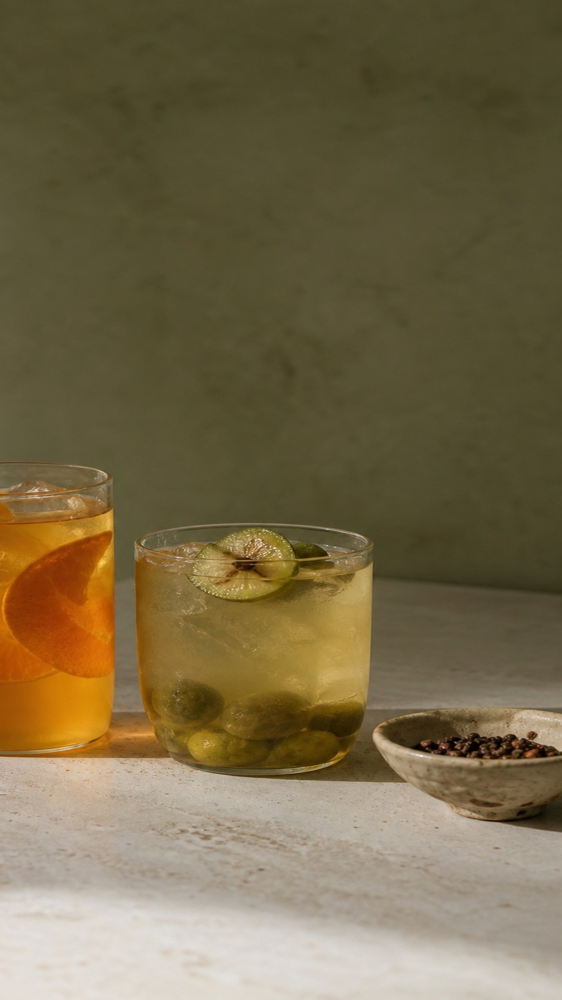
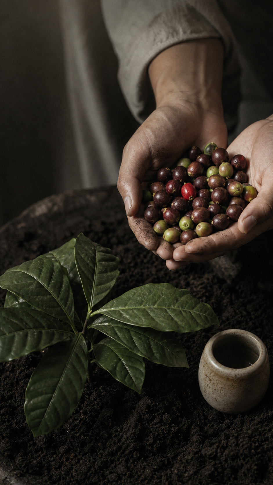
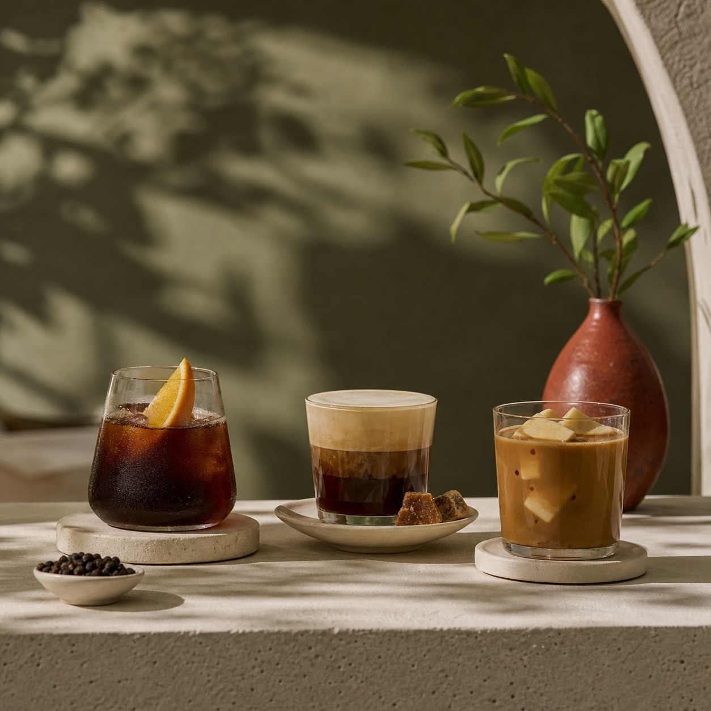

01Trà Sấu Mắc Khén: vị mùa mới trong một ly trà
Trà Sấu Mắc Khén đặt sấu và mắc khén cạnh nền trà trong menu Season. Ba nhóm nguyên liệu quen tên nhưng ít gặp cùng nhau tạo nên một lựa chọn đáng tò mò cho lần ghé mùa này.
A COMMA IS NOT THE END
The Comma là một khoảng nghỉ vừa đủ giữa thành phố — nơi ta có thể ngồi lại với một ly cà phê được chọn lựa cẩn thận.
Không cần ồn ào để được nhớ. Từ hạt cà phê, cách pha đến khoảnh khắc ly nước được đặt xuống bàn, giá trị nằm trong sự chú tâm dành cho từng chi tiết.
“Một không gian thật thoải mái mời bạn ghé chơi, với cà phê chọn lọc tỉ mỉ.”

Không phải mọi điều đáng nhớ đều cần một dấu chấm.
SELECTED FLAVOURS
Ba gợi ý đại diện cho cách The Comma đặt nguyên liệu quen thuộc vào những kết hợp mới.

03 / SELECTEDEspresso, kem sữa mịn và thốt nốt ngào đường.
Espresso · milk cream · palmyra pulpCold brew, nước cam tươi và mắc khén.
Cold brew · orange · mắc khénSingleshot Robusta, sữa tươi và topping tàu hũ.
Vietnamese coffee · fresh milk · tofuSINGLE ORIGIN COFFEE
Hạt cà phê rang sáng tại địa phương được chọn theo mùa, xay và pha mới để giữ lại tính cách rõ nhất trong từng tách. Hãy hỏi barista để chọn hạt theo gu của bạn.
Seasonal selected
V60 · AeroPress · Kalita Wave
THE SPACE / A SHARED NOTE
Trong một bài viết được The Comma đăng lại, không gian quán được kể bằng những chi tiết rất đời thường: đủ yên để tập trung, đủ thoáng để ngồi cùng nhau.
Ảnh từ kênh chính thức: Facebook · Instagram
Một khoảng chung cho những cuộc họp nhỏ, buổi học hoặc câu chuyện cần thêm người.
Dành cho người cần ánh sáng tự nhiên và một nhịp riêng để xử lý công việc.
Một khoảng ngoài trời mát, nơi cuộc trò chuyện có thể chậm lại đôi chút.
Thông tin được kênh The Comma công khai trong bài đăng ngày 23.12.2025.
Nguồn: nội dung khách hàng được Facebook chính thức của The Comma đăng lại (Cre: Midiendichiuu). Xem bài viết ↗
COME FOR A COMMA